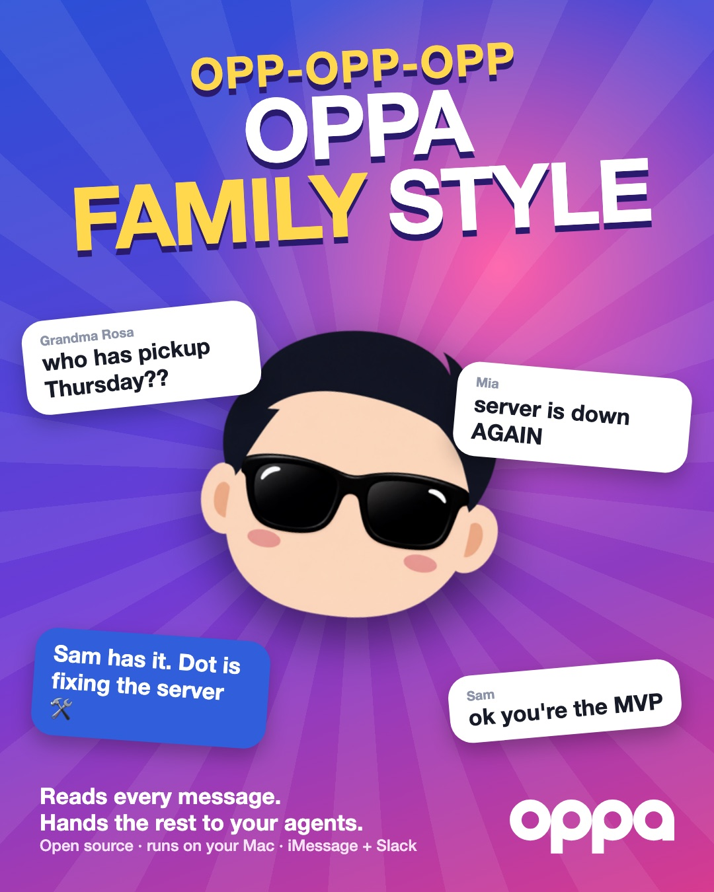

A game
OPPA Family Style
The family group chat is on fire. Send each message to whoever should handle it, on the beat if you can. Let seven pile up and Grandma leaves the chat.

Score 0
Combo ×0
❤️❤️❤️
Rivera Fam 🏡 5 people
OPPA Family Style
Family questions go to OPPA. Things to find go to Grok Bot. Calls go to Muse. Broken things go to Dot.

The theme song
Reads every message, every single one
Remembers Grandma's birthday and the dentist's done
Server's down again? Dot is on the way
Hey! OPPA Family Style.
Parody lyrics, made-up family. No real horses were harmed.